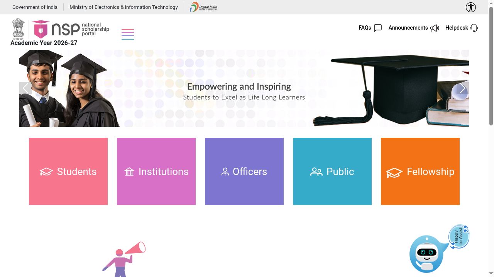
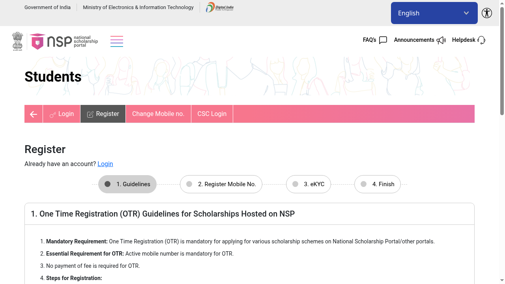
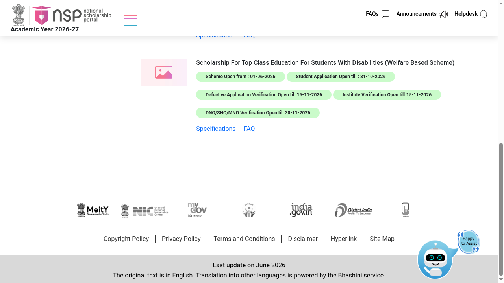

Top Class scholarship for students with disabilities: up to Rs 1.9 lakh a year fees, apply on NSP by 31 October
The Scholarship for Top Class Education for Students with Disabilities pays up to Rs 1.90 lakh a year towards admission and tuition fees for students with benchmark disabilities studying graduate or postgraduate degree or diploma courses at notified premier institutions. On top of fees it pays a maintenance allowance, a one-time laptop grant and more. Fresh applications for 2026-27 are open on the National Scholarship Portal and close on 31 October 2026.
@@COVER@@Who can apply
- Students with a benchmark disability (40% or more, as per the Rights of Persons with Disabilities Act) - keep your UDID card or disability certificate ready
- Admitted to a full-time graduate or postgraduate degree/diploma course at a premier institution notified by the Department of Empowerment of Persons with Disabilities
- Total family income up to Rs 8 lakh a year
- Not receiving any other scholarship or stipend
What you get
- Admission + tuition fee reimbursement up to Rs 1.90 lakh a year (actuals)
- Other compulsory fees (library, sports, medical exam etc.) up to Rs 10,000 a year
- Laptop/computer with accessories: one-time Rs 45,000 in the first year (against bills)
- Aids and assistive devices for your disability: one-time Rs 30,000 in the first year (against bills)
- Maintenance allowance: Rs 3,000 a month for hostellers, Rs 1,500 a month for day scholars
- Special allowances (reader, escort, helper etc.): Rs 2,000 a month
- Book allowance: Rs 5,000 a year
How to apply: step by step

- Keep documents ready: UDID card or disability certificate (40%+), income certificate (up to Rs 8 lakh), admission proof and fee details from your institution, Aadhaar, and your own Aadhaar-linked bank account.
- Complete One Time Registration (OTR) on NSP: open scholarships.gov.in, go to Students, then Register. OTR needs an active mobile number and Aadhaar-based eKYC. It is free.

- Students with disabilities must also log in to the UDID portal and give consent to share their UDID details with NSP - NSP's own announcement says applications cannot be submitted without this.
- Log in on NSP with your OTR number and password, and choose "Scholarship for Top Class Education for Students with Disabilities".

- Fill in personal, academic and bank details, upload the documents, and submit. Note your application ID.
- Track your application on NSP. Your institution verifies by 15 November 2026 and the state/nodal officer by 30 November 2026.
Watch: apply step by step
- English: NSP Scholarship Portal 2026-27: From Profile to Apply - DS HELPING FOREVER, July 2026. Walks through OTR registration, login, profile, document upload, scholarship search and final submission.
- Malayalam: NSP സ്കോളർഷിപ്പ് 2026 അപേക്ഷിക്കാം - Janahitham 24x7, 2026. Explains the 2026 NSP application and OTR method in Malayalam.
These videos are by independent education channels, not the government - always cross-check details on the official NSP pages linked below. Dates on the NSP scheme list (checked 19 October 2026): student applications close 31 October 2026; institute verification 15 November 2026; state/nodal verification 30 November 2026. Benefits and rules are from the Department of Empowerment of Persons with Disabilities guidelines published on NSP.
Sources: NSP scheme list, official scheme guidelines (PDF). Checked 19 October 2026. This is an AiCoN explainer, not a government publication.